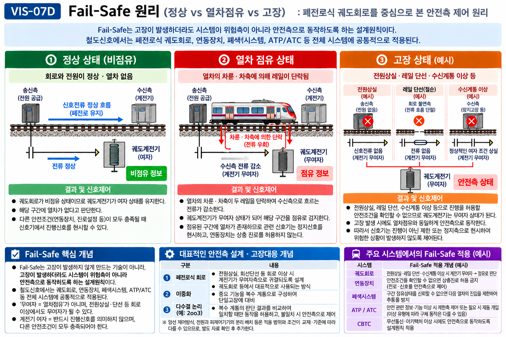

§ 1. Fail-Safe 정의와 목적
개념 A Fail-Safe란 무엇인가 — 핵심 정의
Fail-Safe(페일 세이프): 고장이나 정보 상실이 발생하면, 가능한 한 정지·제한 등 안전측 상태로 이행하도록 설계하는 원칙이다.
4.html 개념 101 (철도공학 핵심정리) 정의
신호기 고장 시 자동으로 정지신호가 현시되는 설계 원칙. 고장해도(Fail) 안전(Safe)하게 — 이름 자체가 원칙을 설명한다.
GATE5 Coverage v2.1 정의
시스템의 일부에 고장(Failure)이 발생했을 때, 위험측보다 안전측으로 귀결되도록 설계하는 원칙. "위험측 고장의 최소화 및 안전측 귀결 우선"이 설계 목표.
⚠️ 핵심 구분: Fail-Safe는 고장 자체를 방지하는 기술이 아니다. 고장이 발생했을 때 위험측이 아니라 안전측으로 귀결되게 설계하는 원칙이다.
| 구분 |
설명 |
| Fail-Safe O |
고장이 발생했을 때 → 안전측(정지·제한)으로 이행하도록 설계 |
| Fail-Safe X |
고장 자체를 막는 기술 / 고장 시 무조건 정지한다는 의미 아님 |
| 이중화와의 관계 |
이중화는 신뢰도·가용도 향상이 목적. 이중화 ≠ Fail-Safe (안전설계에 활용될 수 있으나 동일 개념 아님) |
★ 시험 핵심: "고장 방지 기술"이라는 선지는 Fail-Safe의 오답. "고장 시 안전측 이행 설계원칙"이 정답.
§ 2. 안전측 (Safe Side) vs 위험측 (Danger Side)
개념 B 안전측과 위험측의 구별
| 구분 |
정의 |
예시 |
| 안전측 (Safe Side) |
고장 발생 시 열차를 정지시키는 방향 또는 설비가 안전 상태를 유지하는 방향으로 귀결되는 상태 |
신호기 → 정지 현시. 진로에 설정된 선로전환기가 이탈 전환되지 않도록 쇄정 유지. |
| 위험측 (Danger Side) |
고장 발생 시 열차에게 진행 허용 또는 설비가 위험 상태로 이행하는 방향으로 귀결되는 상태 |
신호기 고장 시 진행 현시 유지. 폐색구간에 다른 열차가 있는데 진입 허용. |
⚠️ 주의 — 전철기(선로전환기) 정위·반위와 안전측·위험측을 고정 대응시키지 않는다.
안전측의 올바른 예: "설정된 진로에 필요한 위치에서 전환되지 않도록 쇄정이 유지되는 것."
정위 = 안전측, 반위 = 위험측으로 일괄 표현하지 않는다.
무여자와 안전측의 관계
철도 계전기 회로에서는 전원상실·회로 단선·접촉불량 등의 대표 고장이 무여자 상태를 만든다.
무여자 → 안전측 귀결이 되도록 설계하는 것이 Fail-Safe 설계의 핵심.
단, "모든 고장이 무조건 정지신호 현시로 귀결된다"는 과도 일반화는 금지.
§ 3. 계전기 여자·무여자와 안전측 동작 관계 [출제근거: RELATED-EXAM]
개념 C 계전기의 여자·무여자 원리
| 상태 |
설명 |
신호·설비 연계 |
| 여자 (Energized) |
코일에 전류가 흘러 철편 흡인 → 접점 전환 → 설비 동작 허용 |
비점유 정보 출력 → 다른 조건(연동장치 등)과 함께 진행 현시 가능 여부 결정 |
| 무여자 (De-energized) |
전류 차단으로 철편 복귀 → 접점 복귀 → 설비 동작 금지 |
점유 정보 출력 → 정지측 제어 |
⚠️ 등치 금지:
· "계전기 여자 = 진행신호"로 단정하지 않는다. 여자 상태는 비점유 정보를 출력하는 것이며, 신호기 현시는 연동장치 등 다른 조건과 함께 결정된다.
· "무여자 = 열차 있음"으로 단정하지 않는다. 전원상실·단선·접촉불량 등 고장에서도 무여자가 발생한다.
무여자의 원인 두 가지
① 열차 점유에 의한 무여자: 차륜·차축이 레일을 단락 → 수신측 전류 감소 → 계전기 무여자
② 고장에 의한 무여자: 전원상실·레일 단선·접촉불량 → 전류 차단 → 계전기 무여자
두 경우 모두 무여자이지만 원인은 다르다. Fail-Safe는 ②의 경우도 안전측(정지·점유 표시)으로 귀결되도록 설계한 것이다.
§ 4. Fail-Safe 구현방법 — L2-A 계전기식·전기회로
개념 D-1 폐전로식 (Closed Circuit) [CROSS-REF 07-06] — 출제근거: VERIFY
폐전로식 채택 이유: 전원상실·레일 단선·접속 불량 등 대표 고장 → 전류 차단 → 계전기 무여자 → 정지측 귀결. Fail-Safe 원칙 충족.
| 상황 |
폐전로식 동작 |
개전로식 동작 |
| 열차 진입 (정상) |
차축 단락 → 전류 감소 → 계전기 무여자 → 점유 표시 |
열차 진입 시 전류 흐름 → 계전기 여자 → 점유 표시 |
| 레일 단선 (고장) |
전류 차단 → 계전기 무여자 → 점유(안전측) 표시 |
전류 없음 = 열차 없음으로 오인 → 비점유(위험측) 표시 |
| 전원 상실 (고장) |
전류 차단 → 계전기 무여자 → 점유(안전측) 표시 |
전원 없음 = 열차 없음으로 오인 → 위험측 귀결 |
🔗 CROSS-REF 07-06: 폐전로식 궤도회로의 열차검지 메커니즘(차륜·차축 레일단락)은 07-06에서 담당. 이 항목은 "왜 폐전로를 채택하는가 — 안전측 귀결 설계원칙"에 초점.
★ 폐전로식은 어떤 고장이 발생해도 전류가 끊기면 안전측(점유·정지)으로 귀결되는 구조이기 때문에 Fail-Safe를 구현한다.
개념 D-2 전원과 계전기 위치를 양단으로 하는 방식 — 출제근거: VERIFY
전원(Battery/Power Supply)을 회로의 한쪽 단에, 피제어 계전기를 반대쪽 단에 배치하는 방식.
목적: 혼촉(混觸, 다른 회로와의 접촉으로 의도하지 않은 전류가 흐르는 현상)·단락에 의한 계전기 오동작 방지. 전원과 계전기를 양단으로 분리하면, 중간 배선에서 혼촉·단락이 발생해도 계전기가 의도하지 않게 여자되는 것을 방지할 수 있다.
🔶 VERIFY: 출제근거 교재 대조 미완료. 안전관리자 시험 직접기출 여부 확인 필요.
개념 D-3 양선 제어방식 (Two-Wire Control) — 출제근거: RELATED-EXAM / 안전관리자 VERIFY
양선(両線) 제어: 계전기 제어회로의 양쪽 도선에 모두 제어조건(스위치·접점)을 삽입하는 방식. DC 회로에서는 +측 도선과 -측 도선 양쪽에 모두 제어조건 삽입.
목적: 혼촉·미류(迷流, 정해진 경로 이외로 흐르는 전류)에 의한 의도하지 않은 계전기 동작 방지.
한선 제어 vs 양선 제어 원리
한선 제어(한쪽 도선만 제어)에서는 나머지 도선을 통해 미류·혼촉 전류가 계전기에 도달 → 오동작 가능.
양선 제어에서는 양쪽 도선 모두에 차단 조건이 있어 오동작 방지.
시험포인트: DC 회로에서는 +측/-측 모두 제어. (철도신호기사 기출 확인)
🔶 VERIFY: 철도신호기사 기출 근거. 안전관리자 시험 직접기출 여부 확인 필요. 교재 대조 미완료.
개념 D-4 단락을 이용한 Fail-Safe 회로방식 — 출제근거: VERIFY
미류(迷流) 등에 의해 계전기가 의도하지 않게 여자되는 오동작을 방지하기 위해, 계전기 측에 단락 요소를 삽입하는 별도 회로기법.
⚠️ 07-06 레일 단락과 반드시 구분할 것:
· 07-06 차륜·차축 레일단락 = 열차 진입 시 레일이 단락되어 열차를 검지하는 원리 (열차검지 메커니즘)
· 단락 Fail-Safe 회로기법 = 계전기 회로 내에서 미류·혼촉에 의한 오동작을 방지하기 위한 별도 회로 설계
두 개념은 다르다. 혼용 금지.
🔶 VERIFY: 교재 수록 여부 및 안전관리자 직접기출 여부 미확인.
개념 D-5 위상제어 (Phase Control) 방식 — 출제근거: 교재 수록 확인 / 안전관리자 VERIFY
교류 신호에서 위상(Phase) 차이를 이용하여 정상 신호와 오류 신호를 구별하는 Fail-Safe 구현 방법. 위상이 맞지 않으면 계전기가 동작하지 않도록 설계 → 노이즈·간섭·미류에 의한 오작동 방지. 주로 교류 궤도회로(AC Track Circuit)에 적용.
🔶 VERIFY: 교재 수록 확인 완료. 안전관리자 시험 직접기출 여부 미확인.
§ 5. Fail-Safe 구현방법 — L2-B 전자·컴퓨터 신호시스템
개념 E-1 이중화 (Redundancy) — 출제근거: VERIFY
이중화(Redundancy): 시스템의 핵심 구성요소를 2중 이상 운영하여 하나가 고장해도 다른 계통이 기능을 이어받는 구조.
기본 목적: 신뢰도(Reliability)·가용도(Availability)·결함 허용(Fault Tolerance) 향상.
⚠️ 이중화 ≠ Fail-Safe: 이중화는 신뢰도·가용도 향상이 기본 목적이며, 안전설계에 이중화 구조가 활용될 수 있다. 그러나 이중화 자체가 Fail-Safe를 보장하지는 않는다. SIL 요구 시스템에서 이중화 구조가 채택된다.
L2-B 계층 분리 원칙
Level 2-A(계전기식 회로 기반)와 Level 2-B(전자·컴퓨터 기반)는 동일 목록으로 합치지 않는다.
L2-B의 이중화·다수결 논리는 Fail-Safe를 지향하는 구조이나, "Fail-Safe = 이중화"로 등치하지 않는다.
🔶 VERIFY: Hot/Warm/Cold Standby 세부구조는 교재 확인 후 포함 여부 결정. 현재 세부구조 확정 보류.
개념 E-2 다수결 논리 (Voting Logic / 2oo3) — 출제근거: VERIFY
다수결 논리: 3개 이상의 채널이 동시 연산하여 다수가 동의하는 결과만 실행하는 방식.
2oo3 (2-out-of-3): 3채널 중 2채널 이상 일치 시 실행. 다수결 논리의 대표 구조. 1채널 불일치 → 이상 감지 → 안전측 처리 가능.
⚠️ 분류 주의 — 1oo2·2oo2는 다수결 논리의 종류로 분류하지 않는다:
· 1oo2 (1-out-of-2): 2채널 중 1개라도 안전 명령 → 실행. 고가용 구조.
· 2oo2 (2-out-of-2): 2채널 모두 일치 시 실행. 고신뢰 구조.
이들은 계통 구성 방식(표결 방식)의 차이이며, 다수결(Voting)과는 구조 원리가 다르다.
⚠️ ATP/ATC/CBTC를 Fail-Safe 자체와 동일 개념으로 표현하지 않는다.
이들 시스템에 Fail-Safe 원칙이 적용되거나 이중화·다수결 구조가 채택될 수 있으나, 시스템별 구체적 적용 여부는 개별 검증이 필요하다.
🔶 VERIFY: 다수결 논리 적용 사례(ATP/ATC/CBTC 등) 시스템별 확인 필요. 교재 수록 여부 미확인.
§ 6. 실제 적용 사례 — CROSS-REF
개념 F-1 궤도회로에서의 Fail-Safe [CROSS-REF 07-06]
폐전로식 궤도회로는 전원상실·레일 단선·접촉불량 등 대표 고장이 모두 계전기 무여자로 귀결된다. 이 무여자 상태가 안전측(점유·정지 방향) 제어로 이어지도록 설계 → Fail-Safe 충족.

이미지를 불러오지 못했습니다.
images/VIS-07D_Fail-Safe_정상vs열차점유vs고장_FINAL.png 경로를 확인하세요.
VIS-07D · Fail-Safe — 정상(비점유) vs 열차점유 vs 고장 상태 비교
🔗 CROSS-REF 07-06 궤도회로: 폐전로식 메커니즘(차축 단락 → 무여자)은 07-06에서 상세 설명. 이 항목에서는 "왜 안전측인가"에 집중.
개념 F-2 연동장치에서의 Fail-Safe [CROSS-REF 07-08]
연동장치의 쇄정 회로는 Fail-Safe 원칙에 따라 설계된다. 회로 이상 시 쇄정이 풀리는 것이 아니라 쇄정이 유지되는 방향(안전측)으로 귀결되어야 한다.
🔗 CROSS-REF 07-08 연동장치: 쇄정 원리·종류(접근쇄정·진로쇄정·진로완해쇄정)는 07-08에서 담당.
개념 F-3 폐색·열차제어에서의 Fail-Safe [CROSS-REF 07-09]
자동폐색장치에서 계전기 무여자 → 점유·정지 현시는 Fail-Safe 원칙의 적용 사례다. 무선통신이 상실되면 정상 운행을 그대로 계속하기보다 제한·정지 등 안전측으로 전환하는 설계원칙도 Fail-Safe를 CBTC 등 현대 시스템에 적용한 사례다.
🔗 CROSS-REF 07-09 폐색시스템: 자동폐색·상용/대용폐색 분류는 07-09에서 담당.
§ 8. 관련 문제 — 실제 DB 자료 기반
수록 기준: signal-exam-data.ts 실제 문항만 수록. 임의 예상문제 생성 금지. 정답 색상 표시 금지 / ✓ 표시 금지 / 선지 bold 금지 (정답과 해설은 §9에만).
▪ sig_050 · grade S · Part 2 (연동장치 파트) · ref: S2
다음 설명에 해당하는 용어·장치로 가장 적절한 것은?
"고장이나 정보 상실이 발생하면 가능한 한 정지·제한 등 안전측 상태로 이행하도록 설계하는 원칙이다."
① 쇄정
② Fail-safe
③ 접근쇄정
④ 반위
▪ sig_194 · grade A · Part 8 (종합) · ref: S8
다음 중 Fail-safe 설계의 예로 가장 적절한 것은? [복원형]
① 신호정보가 소실되면 안전측 정지·제한 상태로 전환
② 통신두절 시 최고속도 유지
③ 검지 고장 시 무조건 진행신호
④ 연동장치 장애 시 모든 진로 자유 설정
▪ sig_071 · grade A+ · Part 3 (궤도회로) · ref: S3
다음 설명에 해당하는 용어·장치로 가장 적절한 것은?
"폐회로식 궤도회로는 일부 레일 단선·회로 단절 시 안전측 점유로 나타날 수 있는 장점이 있다."
① 점유 시 궤도계전기 낙하
② 도상저항
③ 레일 절손 검지 가능성
④ 차축 단락(Shunting)
▪ sig_146 · grade A+ · Part 6 (CBTC) · ref: S6
다음 설명에 해당하는 용어·장치로 가장 적절한 것은?
"무선통신이 상실되면 정상 운행을 그대로 계속하기보다 제한·정지 등 안전측으로 전환하는 설계원칙이다."
① 실시간 위치정보
② 짧은 운전시격
③ 통신두절 시 안전측 제어
④ 고밀도 운전
▪ sig_147 · grade A+ · Part 6 (CBTC) · ref: S6
다음 중 「통신두절 시 안전측 제어」에 대한 설명으로 옳은 것은?
① 정밀 위치정보와 연속 제어를 통해 선행열차를 더 가깝게 추종할 수 있어 얻는 효과이다.
② 제어정보의 실시간성을 저해할 수 있어 CBTC 성능과 안전성 설계에서 중요하게 관리되는 요소이다.
③ 무선통신이 상실되면 정상 운행을 그대로 계속하기보다 제한·정지 등 안전측으로 전환하는 설계원칙이다.
④ CBTC가 짧은 운전시격과 이동폐색을 구현할 때 핵심적으로 사용하는 열차 상태정보이다.
§ 9. 정답 및 해설
▪ sig_050
정답: ②번 Fail-safe
고장이나 정보 상실이 발생하면 가능한 한 정지·제한 등 안전측 상태로 이행하도록 설계하는 원칙이다. ①쇄정은 진로 고정 기구, ③접근쇄정은 열차 접근 시 진로를 고정하는 기능, ④반위는 선로전환기 위치 개념.
▪ sig_194
정답: ①번 신호정보가 소실되면 안전측 정지·제한 상태로 전환
고장 시 위험측이 아니라 안전측 상태로 가도록 하는 것이 Fail-safe다. ②통신두절 시 최고속도 유지 = 위험측. ③검지 고장 시 진행신호 = 위험측. ④진로 자유 설정 = 위험측.
▪ sig_071
정답: ③번 레일 절손 검지 가능성
폐회로식 궤도회로는 레일 단선·회로 단절 시 전류가 차단되어 계전기 무여자 → 안전측 점유로 표시된다. 이것이 Fail-Safe 구현 방식이자, 레일 절손을 간접 검지하는 장점이 된다.
▪ sig_146
정답: ③번 통신두절 시 안전측 제어
무선통신이 상실되면 정상 운행을 그대로 계속하기보다 제한·정지 등 안전측으로 전환하는 설계원칙이다. CBTC에서 Fail-Safe 원칙을 통신 두절 상황에 적용한 사례.
▪ sig_147
정답: ③번
통신두절 시 안전측 제어: 무선통신이 상실되면 정상 운행을 그대로 계속하기보다 제한·정지 등 안전측으로 전환하는 설계원칙이다. ①은 이동폐색 효과, ②는 통신지연, ④는 실시간 위치정보에 대한 설명.
문항 출처 요약: sig_050 (grade S, Part 2) · sig_194 (grade A, Part 8) · sig_071 (grade A+, Part 3) · sig_146·147 (grade A+, Part 6) — 모두 signal-exam-data.ts 실제 수록 문항.